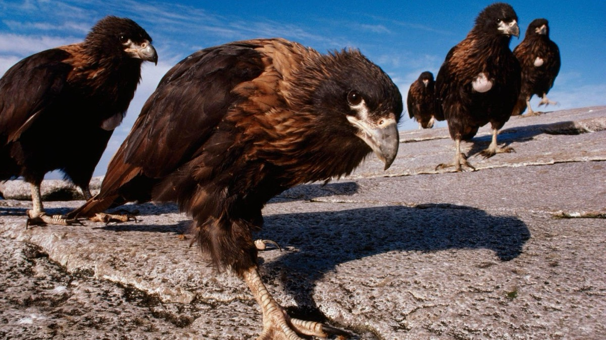

Mândria de a fi
Nu, deloc, doar nu-i o glumâ
Am ajuns la bătrânețe
Ca să ne uităm în urmă
Și-asta cu mare tristețe!
Toate le-am facut cu grabă
Lumea-ntreagă-am colindat
Și-am zburat, zburat degeaba
Nici umbră nu am lăsat
Ne-am mândrit cu numele
De șoimi, cum ne-ați denumit
Ați rămas cu numele
Dar neamul nu ne-a pierit!
Vasile Groza